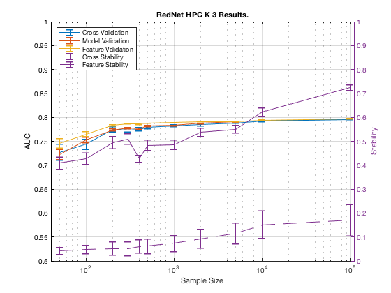

Performance on TIE-Net-Reduced1 with GLL.
summary_perf('RedNet', 1)
Figure 4. GLL results on TIE-Net-Reduced1.
___________________________________________

Table 4. GLL results on TIE-Net-Reduced1.
__________________________________________
Sample_Size p_Converge p_Next Cross_Validation_AUC Model_Validation_AUC Feature_Validation_AUC
___________ __________ _________ ____________________ ____________________ ______________________
' 50 ' ' 0.000 ' ' 0.372 ' ' 0.728 +/- 0.016 ' ' 0.721 +/- 0.011 ' ' 0.746 +/- 0.010 '
' 100 ' ' 0.000 ' ' 0.323 ' ' 0.749 +/- 0.010 ' ' 0.754 +/- 0.006 ' ' 0.765 +/- 0.005 '
' 200 ' ' 0.000 ' ' 0.437 ' ' 0.775 +/- 0.006 ' ' 0.773 +/- 0.002 ' ' 0.784 +/- 0.001 '
' 300 ' ' 0.000 ' ' 0.425 ' ' 0.774 +/- 0.004 ' ' 0.777 +/- 0.002 ' ' 0.787 +/- 0.001 '
' 400 ' ' 0.000 ' ' 0.405 ' ' 0.775 +/- 0.004 ' ' 0.776 +/- 0.002 ' ' 0.786 +/- 0.001 '
' 500 ' ' 0.000 ' ' 0.417 ' ' 0.780 +/- 0.003 ' ' 0.782 +/- 0.001 ' ' 0.788 +/- 0.000 '
' 1000 ' ' 0.000 ' ' 0.390 ' ' 0.782 +/- 0.002 ' ' 0.783 +/- 0.001 ' ' 0.789 +/- 0.000 '
' 2000 ' ' 0.005 ' ' 0.355 ' ' 0.784 +/- 0.002 ' ' 0.787 +/- 0.000 ' ' 0.790 +/- 0.000 '
' 5000 ' ' 0.048 ' ' 0.335 ' ' 0.788 +/- 0.001 ' ' 0.790 +/- 0.000 ' ' 0.791 +/- 0.000 '
' 10000 ' ' 0.185 ' ' 0.185 ' ' 0.792 +/- 0.001 ' ' 0.794 +/- 0.000 ' ' 0.794 +/- 0.000 '
' 100000 ' ' NaN ' ' NaN ' ' 0.796 +/- 0.000 ' ' 0.797 +/- 0.000 ' ' 0.797 +/- 0.000 '
Sample_Size Cross_Stability Number_Features Feature_Stability
___________ ___________________ _____________________ ___________________
' 50 ' ' 0.409 +/- 0.025 ' ' 1.410 +/- 0.055 ' ' 0.041 +/- 0.015 '
' 100 ' ' 0.436 +/- 0.023 ' ' 1.586 +/- 0.070 ' ' 0.048 +/- 0.018 '
' 200 ' ' 0.494 +/- 0.025 ' ' 1.614 +/- 0.067 ' ' 0.052 +/- 0.028 '
' 300 ' ' 0.510 +/- 0.021 ' ' 1.692 +/- 0.069 ' ' 0.051 +/- 0.029 '
' 400 ' ' 0.427 +/- 0.014 ' ' 2.142 +/- 0.076 ' ' 0.061 +/- 0.027 '
' 500 ' ' 0.484 +/- 0.021 ' ' 2.040 +/- 0.079 ' ' 0.062 +/- 0.030 '
' 1000 ' ' 0.486 +/- 0.020 ' ' 2.424 +/- 0.085 ' ' 0.073 +/- 0.033 '
' 2000 ' ' 0.539 +/- 0.018 ' ' 3.050 +/- 0.088 ' ' 0.092 +/- 0.039 '
' 5000 ' ' 0.551 +/- 0.017 ' ' 3.946 +/- 0.081 ' ' 0.116 +/- 0.043 '
' 10000 ' ' 0.622 +/- 0.017 ' ' 4.548 +/- 0.064 ' ' 0.152 +/- 0.058 '
' 100000 ' ' 0.724 +/- 0.013 ' ' 5.262 +/- 0.049 ' ' 0.170 +/- 0.065 '